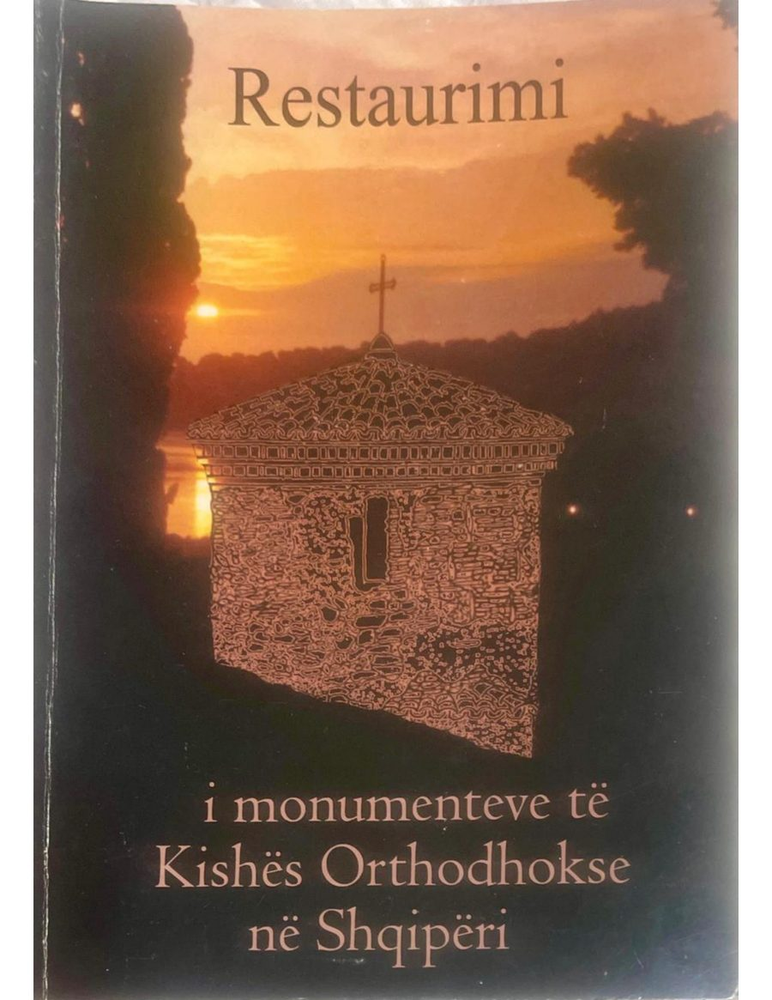

Restaurimi i monumenteve të kultit orthodhoks
Pirro Thomo, Gentian (Joan) Stratobërdha · Botimi i parë · 2005
Të dhënat bazë për restaurimin e mbi 50 ndërtesave kishtare historike, të kryera nën kujdesin e Kishës Orthodhokse Autoqefale të Shqipërisë pas vitit 1991. Për secilin monument jepet vështrimi historiko-arkitektonik, gjendja para ndërhyrjes, punimet konsoliduese e restauruese, zbatuesi, viti dhe kostoja, me fotografi para dhe pas restaurimit. Parathënia është e Kryepeshkopit Anastas.
Botimi anglisht, përkthyer nga Alba Jorganxhi — 204 faqe: lexo · shkarko (7 MB)
Botimi greqisht, përkthyer nga Dhori Q. Qiriazi — 202 faqe: lexo · shkarko (7 MB)
- Faqe
- 204
- Viti
- 2005
- Botues
- Kisha Orthodhokse Autoqefale e Shqipërisë, Tiranë
- Gjuha
- Shqip, me botime paralele anglisht dhe greqisht